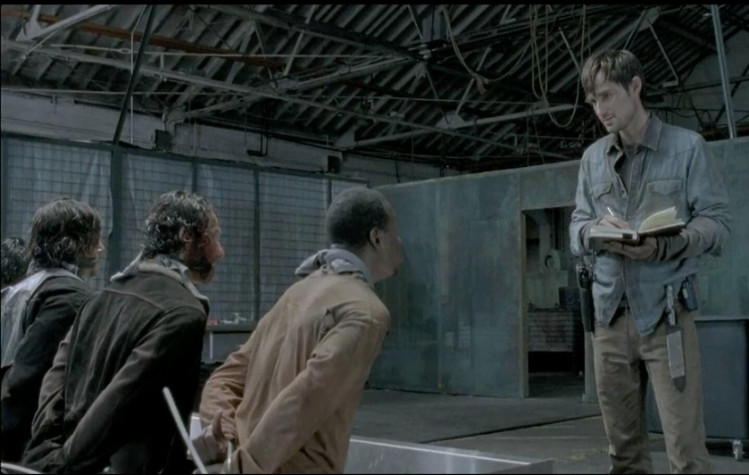
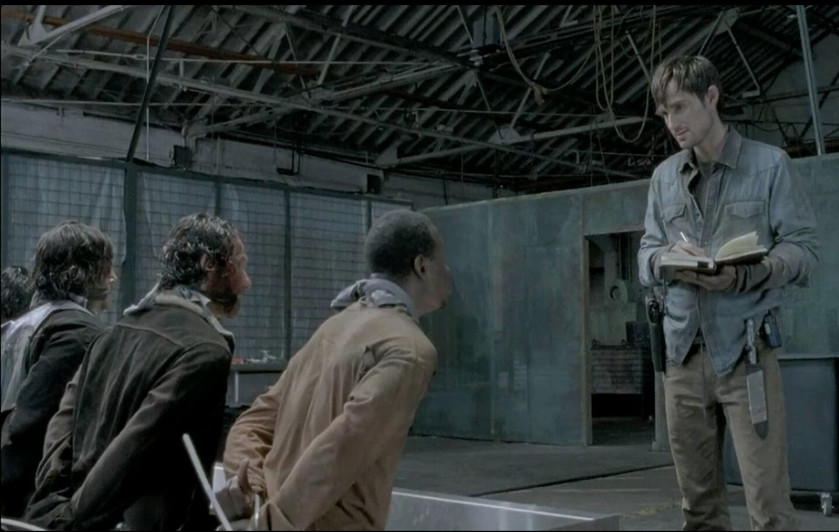

Rick Grimes = personnage principale de la série, il sort du comat et cherche sa famille
Shane Walsh = Meilleur ami et partenaire de Rick dans la police, il fuit l'apocalypse Zombie avec la famille de Rick
Daxyl Dixon = Personnage solitaire qui fait partie du groupe de Rick, il est un chasseur et il porte fièrement son arbalète et conduit généralement une motocyclette
Carole Peletier = femme battu et mere, alors que sa vie ne lui semblait qu'etre douleur et peine, l'arriver des zombies changera a jamais se personnage
Carle Grimes = fils unique de Rick, on le verra grandir tout au long des saisons
Negan = le plus mechant de tout l'Amérique, c'est homme qui controle un gang rebelle qui vole nourritures et armes aux autres humains.
Michonne = femme solitaire au début, finira dans le groupe de Rick et elle est toujours representée avec son Katana.
Années :
2010 à maintenant (saison 10 et 11 ont été renouvelé) pour 9 saisons
 
